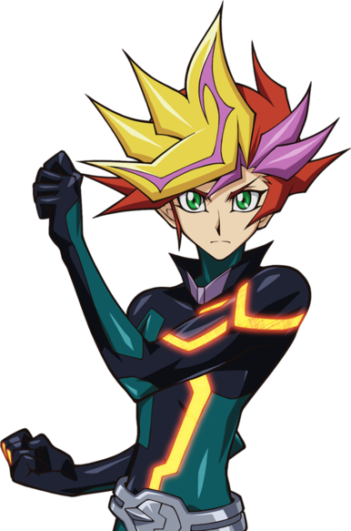
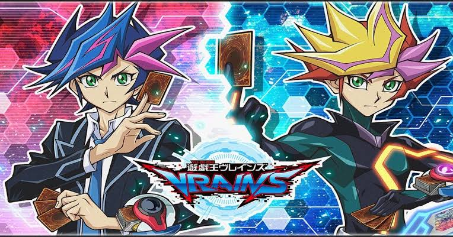
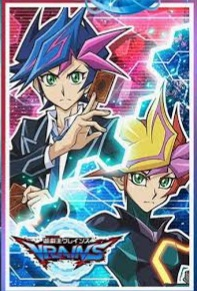
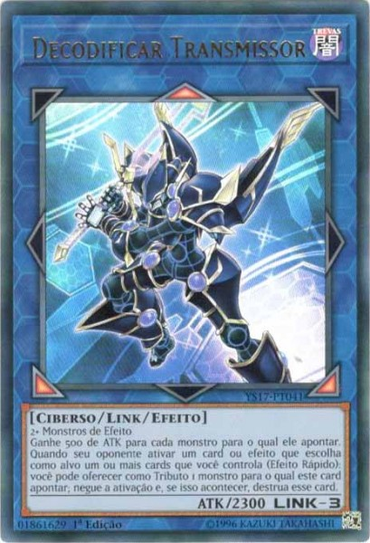
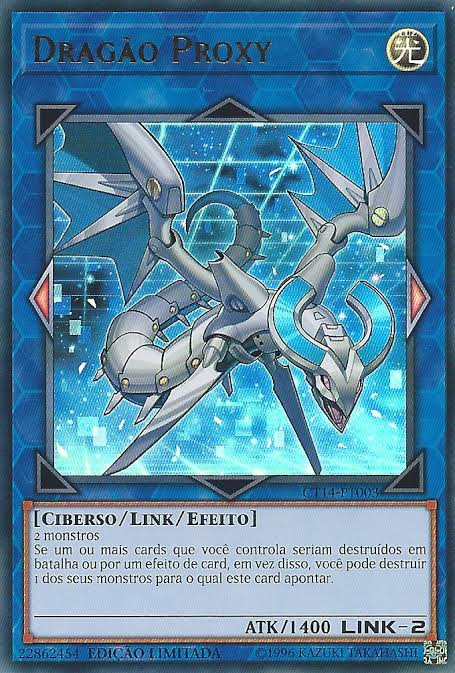
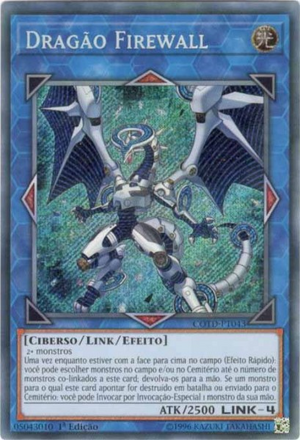

acesse o jogo em:Yu-Gi-Oh! Duel Links-Download
Yu-Gi-Oh! VRAINS é a sexta série de anime de Yu-Gi-Oh! e a quinta série spin-off principal, e começou a ser exibido no Japão em 10 de maio de 2017, após o final de Yu-Gi-Oh! ARC-V.
A série é estrelada por um novo protagonista, Yusaku Fujiki, e toma lugar em um ambiente de ensino médio, apresentando Duelos em Realidade Virtual em um ciberespaço construído com Link VRAINS, a mais avançada tecnologia de realidade virtual. Assim como as três séries spin-off anteriores, Yu-Gi-Oh! VRAINS introduz (e foca) em um novo tipo de Invocação chamado de Invocação-Link.
Yu-Gi-Oh! Duel Links (iOS/Android), Com a adição do novo mundo denominado “Vrains”, a Konami parece ter finalmente encontrado o equilíbrio entre o moderno e nostálgico, conseguindo agradar tanto os fãs da série clássica ao dinamizar a jogabilidade sem alterá-la demais e pela volta dos lendários personagens clássicos, mas como também os jogadores mais audaciosos pela acessibilidade e a mistura de todos os estilos de jogo. Um grande reflexo disso é a marca de 30 milhões de downloads atingida pelo jogo recentemente. Duel Links se mostrou de fato um jogo mais abrangente, com um visual agradável, mecânicas bem executadas e eventos instigantes que, mesmo com suas falhas, oferece uma das experiências mais marcantes da série.
Nesse site iremos te mostrar alguns itens que serão adicionados no jogo, como por exemplo: novas cartas, personagem, tapete de duelo, envelope para cartas entre outros.
Personagem:

História do personagem: Quando era criança,
Yusaku correu nas ruas quando acidentalmente
esbarrou em um outro garoto, cujo nome era Ryoken.
Eles acidentalmente derrubaram seus cartões e os
recolheram rapidamente. Vendo que Yusaku era um fã
de Duel Monsters, Ryoken o convidou para sua casa
para mostrar seu deck. Yusaku foi uma das seis
crianças sequestradas, que foram usadas para o
Projeto Hanói. Ele acordou em uma sala branca e
vazia, com óculos de realidade virtual. Ele os
colocou, e foi forçado a duelar, com as penalidades
de ser eletrocutado e não ter nada para comer se ele
perdesse. Isso se repetiu por meses, enquanto ele
tentava duelar. Após seis meses, Yusaku desmaiou,
uma voz lhe disse que ele não deveria desistir, e
aconselhou-o a pensar em três razões para continuar
lutando, que acabou sendo Varis. Yusaku
perguntouquem era a voz, mas a voz disse que ele
logo iria para casa. O sistema foi dissolvido e,
enquanto Yusaku foi resgatado, o incidente foi
encoberto e não mencionado na mídia.
Independentemente disso, Yusaku se recusou a
acreditar que
ele foi salvo do incidente, como ele desenvolveu
PTSD depois. Nos anos seguintes, ele passou por
terapia para curar seu trauma e tentou viver uma
vida normal, mas a tortura que sofreu foi dolorosa
demais para ele esquecer. Eventualmente, Yusaku
levou seu Baralho e resolveu "encarar seu destino"
se vingando dos Cavaleiros de Hanói, a quem ele
acreditava serem os responsáveis pelo "Projeto
Hanói".
Tapete de duelo:

Envelope:

Cartas adicionadas:
DECODIFCAR TRANSMISSOR

nome:
Decodificar Transmissor
atributo:
trevas
tipos:
ciberso\link\efeito
flechas links:
inferior esquerdo/topo/inferior direito
atk/links:
2300\-3
Descrição:
2+ Monstros de efeito
Ganhe 500 de ATK para cada monstro para o qual ele apontar. Quando seu oponente
ativar um card ou efeito que escolha como alvo um ou mais cards que
você controlar (efeito rapido): você pode oferecer como tributo tributo 1 monstro
para o qual este card apontar; negue a ativação e, se isso acontecer, destrua esse
card.
DRAGÃO PROXY

nome:
Dragão proxy
atributo:
luz
tipos:
ciberso\link\efeito
flechas links:
esquerdo/direito
atk/links:
1400\-2
Descrição:
2 monstros
se um ou mais cards que você controla seriam destruidos em batalhas ou por
efeito de card,em vez disso,você pode destruir 1 dos seus monstros para qual
este card apontar.
DRAGÃO FIREWALL

nome:
Dragão firewall
atributo:
luz
tipos:
ciberso\link\efeito
flechas links:
esquerdo/topo/direito/fundo
atk/links:
2500\-4
Descrição:
2+ monstro
Uma vez enquanto estiver com a face para cima no campo (Efeito rapido): você
pode escolher monstros no campo e/ou no Cemiterio até o número de
monstros co-linkados a este card; devolva-os para a mão. Se um monstro para o qual
este card apontar for destruidos em batalha ou enbiado para o Cemitério: você pode
Invocar por Invocação-especial 1 monstro da sua mão.